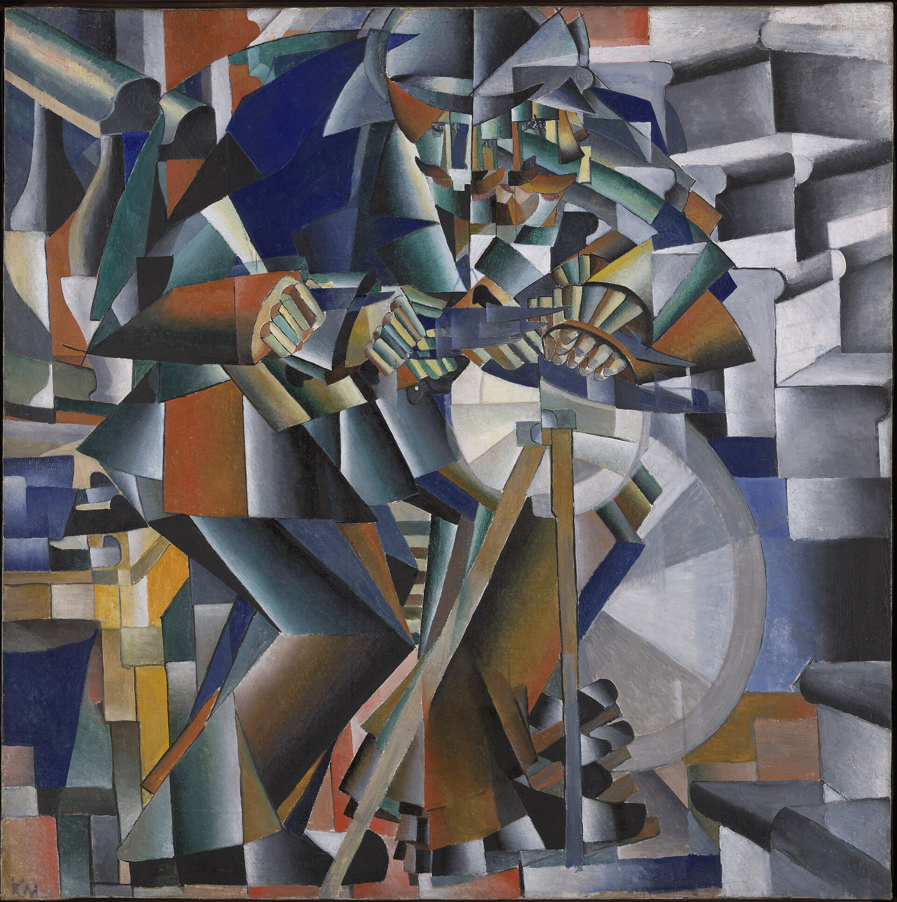

대표 화가
움베르토 보초니, 《공간 속에서 연속하는 유일한 형태》 · 미래주의 · 이탈리아
선정 이유: 보초니의 조각은 움직이는 몸과 주변 공간을 하나의 흐르는 형태로 합쳐 이탈리아 미래주의의 속도 개념을 입체적으로 보여 준다.
걷는 인체의 표면은 바람과 기계 부품처럼 뒤로 뻗고 몸과 공간의 경계가 사라진다. 한 순간의 자세가 아니라 시간 속 연속 운동을 하나의 형태로 만든다는 미래주의의 목표가 명확하다.
Futurism
연결 학습
미래주의는 20세기 초 속도, 기계, 도시, 전쟁과 새로운 감각을 선언문·회화·조각·공연으로 찬양하거나 논쟁한 운동이다. 이탈리아 미래주의와 러시아 입체미래주의는 형식적 교류가 있어도 정치·문학적 조건이 다르다.
입체주의의 분해를 정적인 분석보다 시간과 힘의 표현에 사용했고, 러시아 아방가르드는 이 형식을 비대상 회화와 혁명적 설계로 바꾸었다.
흔한 오해: 기술을 좋아한 낙관적 운동으로만 설명하면 폭력과 전쟁의 미화, 이탈리아 파시즘과의 관계를 지우게 된다. 형식 혁신과 정치적 책임을 함께 보아야 한다.
미래주의의 시대적 배경과 시각적 특징을 국가별 전개 속에서 살펴본다.
선정 이유: 보초니의 조각은 움직이는 몸과 주변 공간을 하나의 흐르는 형태로 합쳐 이탈리아 미래주의의 속도 개념을 입체적으로 보여 준다.
걷는 인체의 표면은 바람과 기계 부품처럼 뒤로 뻗고 몸과 공간의 경계가 사라진다. 한 순간의 자세가 아니라 시간 속 연속 운동을 하나의 형태로 만든다는 미래주의의 목표가 명확하다.
더 볼 이유: 발라는 이탈리아 미래주의가 연속 사진의 원리를 이용해 일상의 움직임을 분석한 방식을 보여 준다.
반복되는 다리와 꼬리는 시간과 속도를 한 화면에 겹치는 미래주의의 특징을 드러낸다. 거대한 기계보다 작은 일상 장면에서도 운동의 리듬을 발견한 점은 발라만의 특성이다.
더 볼 이유: 카라는 이탈리아 미래주의가 군중의 충돌과 정치적 폭력을 반복되는 선과 면으로 표현한 방식을 보여 준다.
휘어지는 곤봉과 붉은 깃발, 겹친 인물은 사건의 속도와 충격을 한 화면에 압축한다. 실제 기억을 입체주의적 분절과 집단 운동으로 재구성한 점은 카라만의 특성이다.
더 볼 이유: 세베리니는 미래주의의 속도와 동시성을 파리의 춤·조명·대중 오락에 적용한 화가다.
분절된 무용수와 반복되는 색면이 음악과 움직임을 동시에 전달한다. 이탈리아 미래주의와 프랑스 입체주의를 국제적인 도시 리듬으로 연결한 점은 세베리니만의 특성이다.

선정 이유: 곤차로바는 반복 윤곽, 분절된 글자, 러시아 도시의 시각문화를 결합해 입체미래주의의 혼성적 성격을 보여 준다.
자전거와 몸의 윤곽이 겹쳐 움직임의 잔상을 만들고 배경의 간판 글자가 화면의 속도를 높인다. 이탈리아의 기계 숭배를 그대로 따르지 않고 러시아의 대중 이미지와 회화 전통을 섞었다.

더 볼 이유: 말레비치는 러시아 입체미래주의의 분절된 형태와 운동이 절대주의로 넘어가는 연결 고리를 보여 준다.
인체와 기계를 반복되는 기하 면으로 결합한 점에서 입체주의와 미래주의의 혼합이 드러난다. 재현 형상을 점차 순수 기하학으로 밀어붙인 전환은 말레비치만의 특성이다. 다른 사조 연결: 절대주의에도 속하며, 이 카드에서는 러시아 입체미래주의의 관점에서 본다.
더 볼 이유: 라리오노프는 러시아 입체미래주의가 대상의 외형을 빛의 교차와 에너지로 해체하는 광선주의로 나아간 모습을 보여 준다.
날카로운 색선이 사물을 가로질러 속도와 빛의 충돌을 드러낸다. 민속적 색채와 서유럽 전위 기법을 결합해 러시아 고유의 추상을 모색한 점은 라리오노프만의 특성이다.